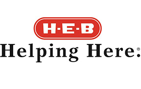

November 10 – 18, 2012
Hunger and Homelessness Awareness Week is your chance to make Austin a better place to live for everyone. The Ending Community Homelessness Coalition (ECHO) is showcasing the city's most active organizations that work to end homelessness and hunger here. Learn about these organizations and make an informed choice about where your volunteer hours will make the greatest impact.
Emergency shelters and street-level outreach help, but transitional and permanent housing are proven to address the long-term needs of homeless individuals and families. Rapid re-housing can assist homeless individuals successfully move to, and stay in, conventional housing. Identifying and preventing at-risk people from becoming homeless in the first place is even better. Austin only lacks the will, not the power. You can help.
Events
Saturday, November 10
11am: City of Austin Proclamation
This event at City Hall includes reading an official proclamation in support of Hunger & Homelessness Awareness Week by Austin's City Council members.
11am–2pm: Family Festival
All Austin Families are invited to attend the ECHO Family Festival, a signature event during H&H Week! This FUN-filled event gives families the opportunity to experience the joy of helping our neighbors while learning more about homelessness in our community.
Sunday, November 11
Morning and Lunch: Veterans Day Parade and Memorial Ceremony
The Annual Veterans Parade celebrates the lives and sacrifices of United States military men and women. Homelessness affects many of our veterans. Come out to support our veterans at the parade and ceremony.
Tuesday, November 13
Morning: Travis County Proclamation
Reading of the official proclamation in support of H&H Week by leaders of Travis County.
Noon: Permanent Supportive Housing Movie Online Launch
Watch our short documentary about Permanent Supportive Housing in Austin, a solution to homelessness. Help us spread the word, by sharing this documentary with friends on Facebook and Twitter!
7pm: Oxfam Hunger Banquet
This event raises awareness about the inequalities of food distribution in our community and world.
Wednesday, November 14
8–10am: Poverty Forum
This closed event, cohosted by ECHO and One Voice, is a conversation among Executive Directors and interested parties to discuss the passion, reality and frustration with addressing poverty in this community.
6–10pm: Walk a Mile Through Homelessness
Attendees learn about the harsh realities of homelessness, through a powerful, yet safe simulation from the Missouri Association for Community Action. Attendess accomplish challenges common in homelessness and learn about services available to our neighbors.
Friday, November 16
9am–Noon: Managing Challenging Tenants
This event offers tools and resources for property managers who are involved in Permanent Supportive Housing or others who work with similar clientele.
Saturday, November 17
9am–3pm, Austin State Hospital, 4110 Guadalupe, Austin, TX 78751: Homeless Resource Fair
Formerly known as Stand Down, this one-day event links homeless individuals and families with community resources. Attendees receive medical services, referrals to social service agencies, legal assistance, haircuts, food, and much more. Lend a hand and help us restore hope for our homeless neighbors.
Volunteer
Join our community of volunteers!
Our volunteers mean the world to us. Their dedication and passion for helping others is what makes our events such big successes. We appreciate all the time and energy they put into assisting us, and we look forward to working with them on future projects.
This year alone we will need more than 150 volunteers for a variety of projects. We're looking for people with all talents and skill sets including marketing, social media or helping set up running events.
If you're interested in volunteering with us, click here to sign up. Thank you in advance for your help!
Our Documentary
A short documentary about Permanent Supportive Housing in Austin, a solution to homelessness. Through our online campaign to watch and share the video using YouTube, we hope to make it the latest viral sensation, so share it on Facebook and Twitter.
Sponsors
Thank you to our sponsors!
Contact us if you want to become a sponsor or donate to our events that benefit our great community.
Community Partners
Toolkits
Branding and Design tools to help all organizations, volunteers, and sponsors create a united H&H Week!
Social Media Strategy
Cohesive Event Strategy